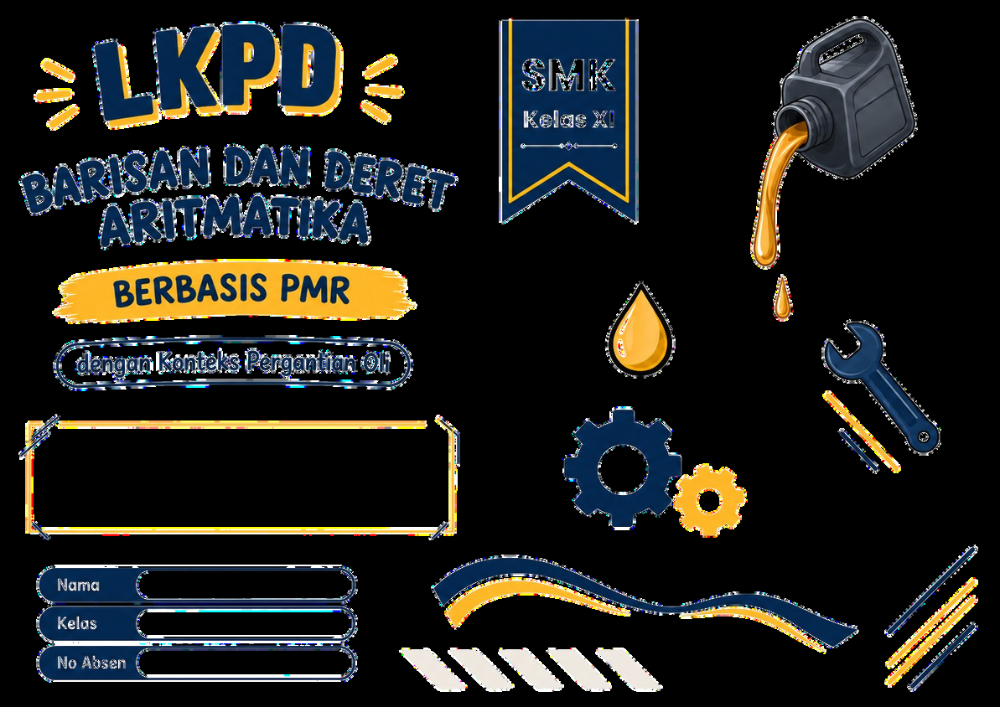

LKPD INTERAKTIF
BARISAN DAN DERET ARITMATIKA
Penerapan Kontekstual Masalah Servis Berkala & Pergantian Oli Kendaraan

IDENTITAS PESERTA DIDIK
Silakan lengkapi identitasmu dengan benar. Tombol "Mulai Pengerjaan" akan aktif otomatis setelah semua field wajib terisi.
Petunjuk Penggunaan e-LKPD
- Baca setiap permasalahan kontekstual bengkel otomotif dengan teliti sebelum mengerjakannya.
- Perhatikan informasi pada catatan riwayat servis (service record Toyota) dan setiap aktivitas pembelajaran.
- Kerjakan setiap aktivitas secara berurutan langkah demi langkah menggunakan tombol navigasi di bagian bawah.
- Gunakan fitur interaktif (form isian angka, simulasi odometer KM, dan drag-and-drop kartu rumus) pada bagian yang disediakan.
- Tuliskan hasil perhitungan dan kesimpulan pada tempat yang tersedia secara mandiri.
- Pada langkah akhir, periksa ringkasan jawabanmu dan klik tombol "Kirim Jawaban ke Guru" untuk dinilai secara otomatis.
Ayo Mengamati: Servis Berkala Kendaraan
Mobil digunakan untuk berbagai keperluan sehari-hari sehingga perlu dirawat melalui servis secara berkala. Saat melakukan servis, mekanik perlu memperhatikan kondisi kendaraan dan jarak tempuh pada odometer.
Setiap mobil memiliki tingkat penggunaan yang berbeda sehingga pertambahan jarak tempuhnya juga dapat berbeda. Catatan jarak tempuh dari beberapa kali servis dapat membantu mekanik mengetahui pola perubahan jarak tempuh kendaraan.
 Pemeriksaan Jarak Tempuh & Servis Berkala di Bengkel Resmi
Pemeriksaan Jarak Tempuh & Servis Berkala di Bengkel Resmi
Mengapa Catatan Servis Sangat Penting?
Bagi seorang mekanik profesional, riwayat servis bukan sekadar angka di atas kertas. Dari catatan tersebut, mekanik dapat memprediksi kapan pelumas mesin harus diganti, mengantisipasi keausan komponen bergerak, serta memastikan performa dan keselamatan kendaraan.
Klik tombol di bawah untuk menyimulasikan interval servis berkala tiap pertambahan 10.000 KM:
Membaca dan Memahami Service Record
Permasalahan: Kamu sedang bertugas sebagai mekanik di sebuah bengkel resmi. Seorang pelanggan datang membawa mobilnya untuk melakukan servis dan menyerahkan kartu service record mobil tersebut. Sebelum melakukan pemeriksaan teknis, kamu perlu memahami riwayat servis mobil agar pemeriksaan yang dilakukan tepat sasaran.
Lengkapilah lembar catatan servis di sebelah kanan berdasarkan data asli pada foto service record di sebelah kiri:
Pembahasan Aktivitas 1:
- Masuk Servis: Tanggal
04-12-2021dengan jarak tempuh 56.125 KM. - Kembali Servis: Bulan
JUNI 2022dengan jarak tempuh 66.125 KM. - Pergantian Part: Oli Mesin dan Filter Oli telah diganti (diberi tanda centang pada lembar servis).
Menemukan Pola Perubahan Jarak Tempuh (Beda)
Pada aktivitas sebelumnya, kamu telah mencatat jarak tempuh mobil saat masuk servis pertama dan jarak tempuh yang disarankan untuk servis berikutnya. Sekarang, perhatikan kembali catatan tersebut untuk melihat pola perubahan jarak tempuhnya.
| Servis Ke- | Jarak Tempuh (KM) | Pola Pertambahan Jarak Tempuh (KM) |
|---|---|---|
| Servis 1 (Awal) | Jarak tempuh awal (\(a\)) | |
| Servis 2 | \( 56.125 + 10.000 \) | |
| Servis 3 | \( 66.125 + 10.000 = 56.125 + 2(10.000) \) | |
| Servis 4 | \( 76.125 + 10.000 = 56.125 + 3(10.000) \) |
Pembahasan Aktivitas 2:
- Selisih (Beda / \(b\)): \( 66.125 - 56.125 = \mathbf{10.000\text{ KM}} \).
- Prediksi Servis 3: \( 66.125 + 10.000 = \mathbf{76.125\text{ KM}} \).
- Prediksi Servis 4: \( 76.125 + 10.000 = \mathbf{86.125\text{ KM}} \).
- Prinsip Servis Otomotif: Waktu dan jarak tempuh keduanya wajib dipertimbangkan dengan prinsip "mana yang tercapai lebih dulu" (*whichever comes first*).
Menemukan Rumus Suku ke-n Barisan Aritmatika (\(U_n\))
Jika pelanggan ingin mengetahui perkiraan jarak tempuh pada servis ke-20, apakah kita harus menghitungnya satu per satu dengan menambah 10.000 KM berulang kali? Tentu memerlukan waktu yang cukup lama. Mari kita cari rumus umum suku ke-\(n\) (\(U_n\)).
| Suku | Nilai Suku | Pola Berdasarkan Suku Awal (\(a\)) & Beda (\(b\)) |
|---|---|---|
| \( U_1 \) | \( 56.125 \) | \( a \) |
| \( U_2 \) | \( 66.125 \) | \( a + b \) |
| \( U_3 \) | \( 76.125 \) | \( a + 2b = a + (3 - 1)b \) |
| \( U_4 \) | \( 86.125 \) | \( a + 3b = a + (4 - 1)b \) |
| \( U_n \) |
\( U_n \) =
+ (
−
)
|
|
\( U_{20} = 56.125 + (19 \times 10.000) \)
\( U_{20} = 56.125 + 190.000 \)
Pembahasan Aktivitas 3:
- Rumus Suku ke-\(n\): \( U_n = a + (n - 1)b \).
- Menentukan Servis ke-20:
\( U_{20} = 56.125 + (20 - 1)10.000 = 56.125 + 190.000 = \mathbf{246.125\text{ KM}} \).
Menghitung Jumlah Jarak Tempuh (Pengantar Deret)
Seorang pemilik kendaraan ingin mengetahui total akumulasi seluruh jarak tempuh yang tercatat pada odometer dari servis ke-1 sampai servis ke-5. Hal ini dilakukan untuk memperkirakan total keausan mesin dan biaya perawatan berkala.
Pembahasan Aktivitas 4:
- \( 56.125 + 66.125 + 76.125 + 86.125 + 96.125 = \mathbf{380.625\text{ KM}} \).
- Menjumlahkan satu per satu untuk suku yang banyak (\(n\) besar) sangat tidak praktis, sehingga kita membutuhkan rumus Deret Aritmatika (\(S_n\)).
Menemukan Rumus Deret Aritmatika (\(S_n\))
Penjumlahan dari suku-suku suatu barisan aritmatika disebut dengan Deret Aritmatika (\(S_n\)). Mari kita temukan rumus \(S_n\) dengan memanfaatkan metode penjumlahan berpasangan (metode Gauss).
| Banyak Servis (\(n\)) | Bentuk Penjumlahan Suku | Jumlah (\(S_n\)) |
|---|---|---|
| \( n = 1 \) | \( U_1 = 56.125 \) | \( 56.125 \) |
| \( n = 2 \) | \( 56.125 + 66.125 \) | |
| \( n = 3 \) | \( 56.125 + 66.125 + 76.125 \) | |
| \( n = 4 \) | \( 56.125 + 66.125 + 76.125 + 86.125 \) | |
| \( n = 5 \) | \( 56.125 + 66.125 + 76.125 + 86.125 + 96.125 \) |
Jika kita menuliskan deret secara maju dan mundur:
\( S_n = U_1 + U_2 + \dots + U_n \)
\( S_n = U_n + U_{n-1} + \dots + U_1 \)
Ketika dijumlahkan, setiap pasangan suku menghasilkan nilai yang sama yaitu \( (a + U_n) \).
Berapa banyak pasangan yang terbentuk untuk \(n\) suku? Ada
pasangan.
Substitusikan \( U_n = a + (n - 1)b \) ke dalam rumus di atas:
Pembahasan Aktivitas 5:
- Rumus Deret Aritmatika: \( S_n = \frac{n}{2}(2a + (n - 1)b) \) atau \( S_n = \frac{n}{2}(a + U_n) \).
- Jumlah KM Sampai Servis ke-10:
\( S_{10} = \frac{10}{2} \left[ 2(56.125) + (10 - 1)10.000 \right] \)
\( S_{10} = 5 \times [112.250 + 90.000] = 5 \times 202.250 = \mathbf{1.011.250\text{ KM}} \).
Penerapan Kasus Nyata & Refleksi Mandiri
Studi Kasus Baru di Bengkel: Sebuah mobil operasional perusahaan melakukan servis pertama pada jarak tempuh 30.000 KM. Mobil tersebut dijadwalkan melakukan servis berkala setiap pertambahan jarak tempuh 10.000 KM.
Pembahasan Aktivitas 6:
- Diketahui: \( a = 30.000 \), \( b = 10.000 \), \( n = 15 \).
- Menentukan KM Servis ke-15 (\(U_{15}\)):
\( U_{15} = a + (15 - 1)b = 30.000 + 14(10.000) = 30.000 + 140.000 = \mathbf{170.000\text{ KM}} \). - Menentukan Jumlah KM Sampai Servis ke-15 (\(S_{15}\)):
\( S_{15} = \frac{15}{2}(a + U_{15}) = 7{,}5 \times (30.000 + 170.000) = 7{,}5 \times 200.000 = \mathbf{1.500.000\text{ KM}} \).
Ringkasan Jawaban & Pengumpulan e-LKPD
Selamat! Kamu telah menyelesaikan seluruh rangkaian aktivitas pembelajaran e-LKPD Barisan dan Deret Aritmatika. Silakan periksa kembali ringkasan identitas dan status pengerjaanmu di bawah ini sebelum mengirimkan ke sistem Guru.
Status Tiap Aktivitas Lembar Kerja:
| No | Aktivitas Pembelajaran | Topik Matematis PMR | Bobot Skor | Status Pengisian |
|---|
Kirim Lembar Kerja ke Guru Sekarang?
Data identitas, durasi pengerjaan, seluruh isian jawaban, dan total skormu akan disimpan langsung ke database server sekolah.